Goodfellas
Main Content
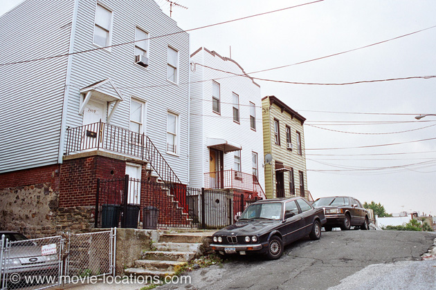
“As far back as I can remember, I always wanted to be a gangster” – after one of the greatest openings ever to a movie, Martin Scorsese’s hard-eyed look at the career of wiseguy Henry Hill roars off with frantic energy and a relentless soundtrack alternating schmaltzy ballads and pounding rock.
The film is shot entirely on location around New York City, the borough of Queens and New Jersey, though not always where it claims to be.
▶ The ‘Brooklyn’ home of young Henry (Christopher Serrone), where he enviously watches the sharp-suited wiseguys from his bedroom window, is 24-09 32nd Street, just south of 24th Avenue, Astoria, in Queens.
In the years since 1990, an awful lot of the locations have closed down or even been demolished. One such is the building opposite the Hill family home, which housed the ‘Pitkin Ave Cab Co’ run by Tuddy Cicero, where Henry gets his first job parking Cadillacs. ⏏
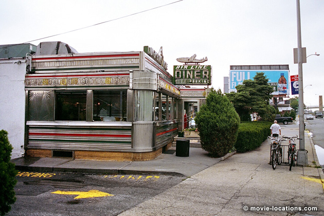
▶ The ‘Idlewild Airport’ scenes used the cargo buildings of Kennedy Airport. Idlewild became Kennedy Airport in 1963, but it's near to New York's other main airport, LaGuardia, that you’ll find the ‘Airline Diner’, where the grown-up Hill (Ray Liotta) and pal Tommy DeVito (Joe Pesci) steal a truck.
It’s now part of the Jackson Hole franchise. Confusingly, but thankfully, it keeps the famous old neon ‘Airline’ sign. You can grab a burger in the classic pink and chrome interior of the Jackson Hole Diner, 69-35 Astoria Boulevard at 70th Street in Astoria Heights, Queens. ⏏
▶ The kitschy ‘Bamboo Lounge’, where Hill’s narration introduces the local characters and Tommy does his scary “funny guy” turn was the Hawaii Kai Restaurant, which was stood at 1638 Broadway at 50th Street in Midtown Manhattan. The sign was still hanging outside long after the restaurant closed, but like the glorious South Seas decor, it’s now only a memory. ⏏
▶ The exterior of the lounge was an Italian restaurant called Collaro’s, 2758 Coney Island Avenue just south of Avenue Y, near Sheepshead Bay in Brooklyn. It’s since been replaced by a Nissan dealership. ⏏
As they sit in the car waiting for the doomed restaurant to go up in flames, Tommy talks a reluctant Henry into accompanying him on a double date.
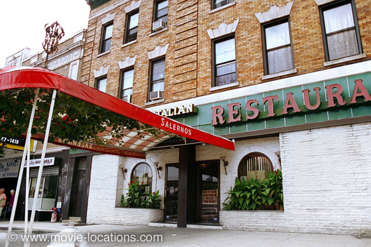
▶ Karen (Lorraine Bracco) is distinctly unimpressed with Hill on the foursome’s first evening at the since-closed Salerno’s Restaurant, 117-11 Hillside Avenue at Myrtle Avenue, Richmond Hill, Queens.
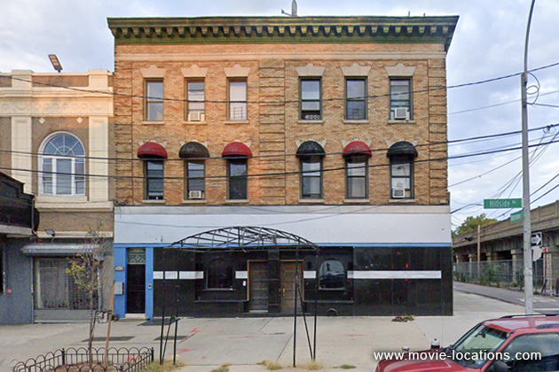
I believe it later became an Indian restaurant but now seems to be vacant and looks like it may be turned into apartments. The old Salerno’s can also be glimpsed in Righteous Kill, with Robert de Niro and Al Pacino. ⏏
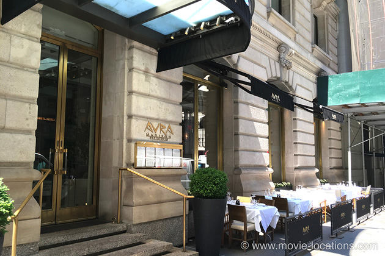
▶ But Hill goes on to make a little more of an impression, whisking Karen through the kitchen entrance of the old Copacabana Nightclub, 10 East 60th Street at Fifth Avenue in Manhattan. It’s long since closed, but you can still see the entrance used for the electrifying tracking shot. The nightclub was formerly featured in Scorsese’s Raging Bull, and in Brian De Palma’s Carlito’s Way.
The Copacabana closed in 1992 and the premises is now occupied by Greek restaurant Avra Madison, 14 East 60th Street. ⏏
▶ After his first big airport job, Hill relaxes with Karen at the Catalina Beach Club, 2041 Park Street in Atlantic Beach on Long Island’s southwest coast. The pair go on to get married. ⏏
▶ There’s no shortage of financial gifts at the reception, held at Oriental Manor, 1818 86th Street, in Bensonhurst, Brooklyn. The Manor closed in 2007, and the premises is now department store, American Place. ⏏
▶ Hill’s ‘Suite Lounge’, where Billy Batts (Frank Vincent) gets stomped into a bloody pulp after crossing Tommy, to the gentle hippie strains of Donovan’s Atlantis, was Lido Cabaret (formerly the Spartan Restaurant), 73-20 Grand Avenue at 73rd Place, Maspeth, Queens. Although it was still recognisable a few years ago, the building has since been demolished to be replaced by shops and offices. ⏏
▶ Hill is not a guy to miss out on any of the pleasures afforded his position, including keeping a girlfriend on the side. After Friday night at the Copacabana, he takes his new sweetheart to apartment block The Warrenton, 109-20 71st Road at Queens Boulevard, Forest Hills. ⏏
▶ There’s no ‘Florida’, of course – the ‘Tampa’ zoo, where Hill accompanies the coldly ruthless Jimmy Conway (Robert de Niro) as they threaten to feed a debtor to the lions, is Prospect Park Zoo, 450 Flatbush Avenue in Brooklyn. ⏏
▶ After a stint in jail, Henry branches out on his own into a spot of dealing. He and Karen move into a home of glorious eye-swivelling, gold-plated vulgarity at 1080 Inwood Terrace, on the corner of Deerwood Road in Fort Lee, New Jersey, just over the George Washington Bridge from Manhattan. ⏏
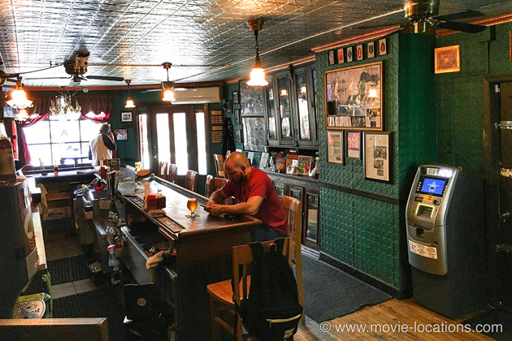
▶ Jimmy Conway hangs out at Neir’s Tavern, 87-48 78th Street at 88th Avenue, in Woodhaven, where the ambitious Lufthansa heist is planned.
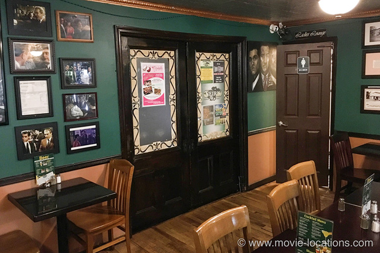
One of the oldest, if not the oldest, bars in New York, Neir’s opened in 1829 as the Old Blue Pump House, a popular stop for the nearby Union Course Race Track.
Later becoming the Old Abbey and then Neir’s Social Hall (after being purchased around the turn of the century by Louis Neir), it's now a superb friendly neighbourhood bar which proudly celebrates its Goodfellas connection.
The tavern has more recently been featured in Brett Ratner’s 2011 Tower Heist, with Ben Stiller and Eddie Murphy. ⏏
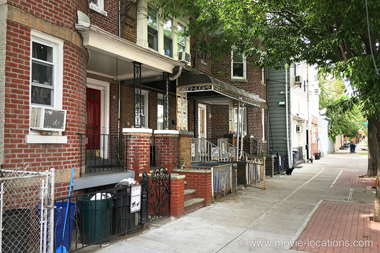
It’s in Neir’s that Jimmy flips out at the post-heist party when he discovers that his co-conspirators have been splashing out their new-found cash, which is not good news. As they walk along 78th Street toward the bar, Henry realises that Jimmy is planning to get rid of all of his problems.
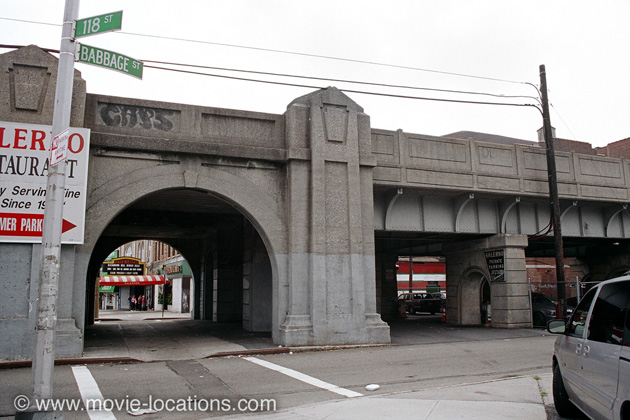
▶ As Jimmy cuts the links between himself and the airline robbery, bodies start to turn up all over. Kids discover the bloody couple in a pink Cadillac under the trestle of the Long Island Railroad tracks on Babbage Street – which is right alongside Salerno’s restaurant in Richmond Hills. ⏏
▶ Down in the Meatpacking District, the body of Frankie Carbone (Frank Sivero) is discovered deep frozen in a refrigerated meat truck on Washington Street at Little West 12th Street. Gentrification has seen the street transformed into a row of upscale restaurants. ⏏
▶ Henry and Jimmy meet up in the ‘Sherwood Diner’ to wait for the news of Tommy, who’s to become a ‘Made Man’. The Sherwood is a real diner on Rockaway Turnpike in Lawrence, where the events actually happened, but the film uses what was the Clinton Diner, which was sensibly renamed Goodfellas Diner, 56-26 Maspeth Avenue, Maspeth in Queens. The diner was damaged by a fire just a few days before my visit in June 2018 and was boarded up as you can see. There were plans for it to reopen but, as of 2026, according to Google Maps, nothing seems to have changed but the proliferation of graffiti.
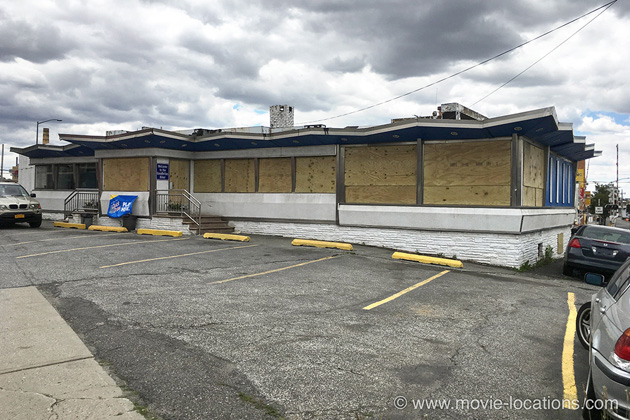
The news for Jimmy turned out not to be good, either, and it was outside this diner that he took out his rage on a payphone. ⏏
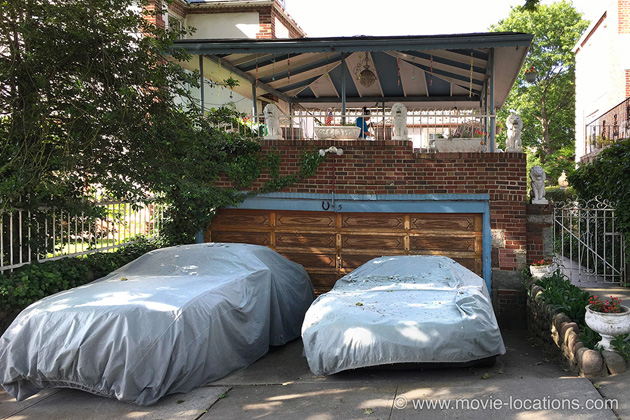
▶ The rather florid house with the sunken garage alongside, where Tommy discovers too late that he’s been set up, is 5 80th Street, at Shore Road, in Bay Ridge, Brooklyn. It's only a few blocks from Tony Manero's home from Saturday Night Fever. ⏏
▶ Increasingly slipping into coke-addled paranoia, Henry delivers unwanted guns to Jimmy at his house, 94-24 220th Street at 94th Road, Jamaica, in Queens. ⏏
▶ The shopping mall where Hill makes a jittery phone call about being followed by a ’copter, is Pergament Mall, Richmond Avenue, Staten Island, which is pretty much still recognisable. ⏏
It turns out that the ’copter is not a symptom of Hill’s paranoia after all as he finds himself busted.
▶ The restaurant kitchen where he goes to plead for help from Paulie Cicero (Paul Sorvino) was Martin’s Bar & Grill, 228 West Houston Street at Varick Street in the West Village. There are no more of Paulie’s sausages being served up here – it’s now a branch of Subway. ⏏
▶ Karen’s edgy meeting with the increasingly paranoid Jimmy Conway was filmed on Smith Street at 9th Street, alongside the Gowanus Canal, under the elevated railway F Line in Brooklyn’s dodgy Red Hook district. ⏏
▶ Henry Hill’s trial, where he finally informs on Jimmy and boss Paulie, was filmed in New York County Courthouse, 60 Centre Street. ⏏
Visit Info
Visit The Film Locations
New York
Flights: John F Kennedy International Airport, New York, NY 11430 (tel: 718.244.4444)
Visit: New York
Travel around: MTA
Visit: the Jackson Hole Diner, 69-35 Astoria Boulevard, Jackson Heights, NY 11370 (tel: 718.204.7070)
Visit: Prospect Park Zoo, 450 Flatbush Avenue, Brooklyn, NY 11225 (tel: 718.399.7339)
Visit: Neir’s Tavern, 87-48 78th Street, Woodhaven, NY 11421 (tel: 718.296.0600)
Visit: Goodfellas Diner, 56-26 Maspeth Avenue, Maspeth, NY11378 (tel: 718.894.1566)
New Jersey
Visit: New Jersey
Visit: the Catalina Beach Club, 2041 Park Street, Atlantic Beach, NY 11509 (tel: 516.239.2150)